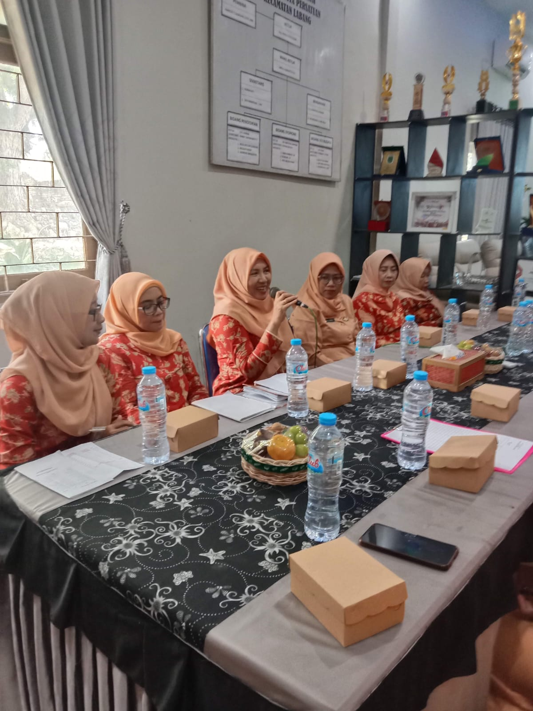
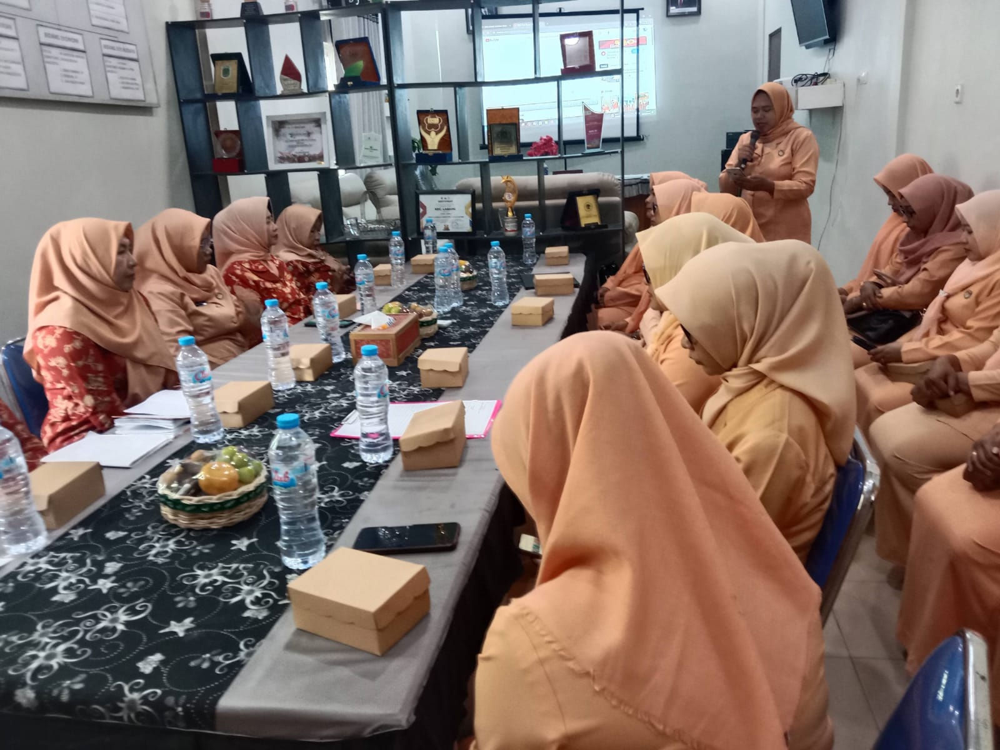
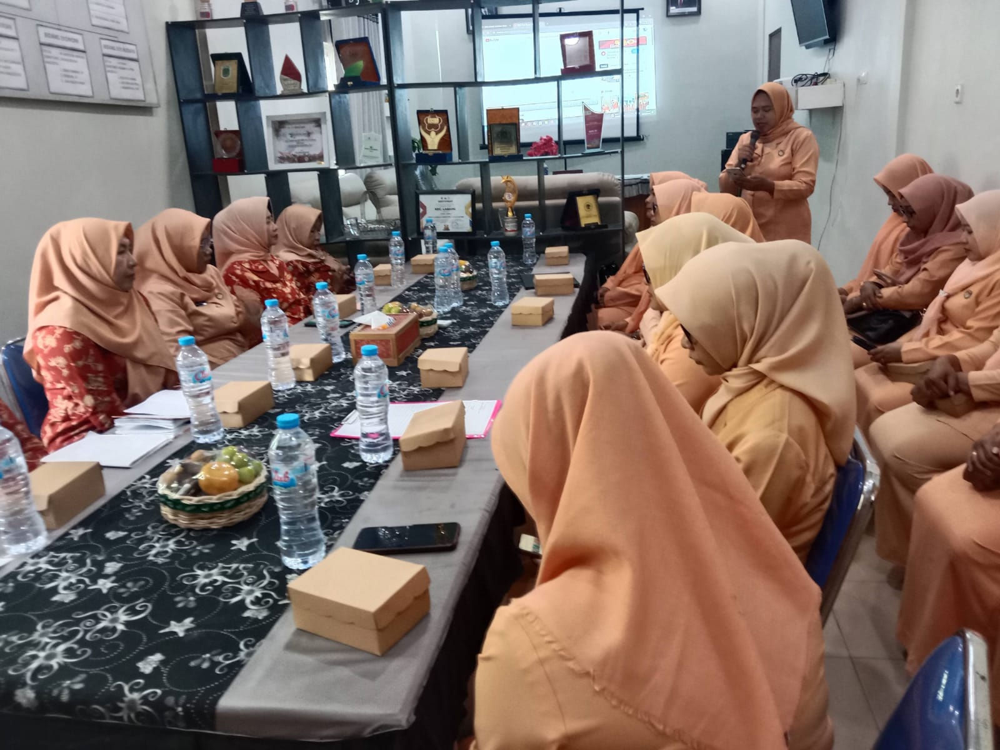
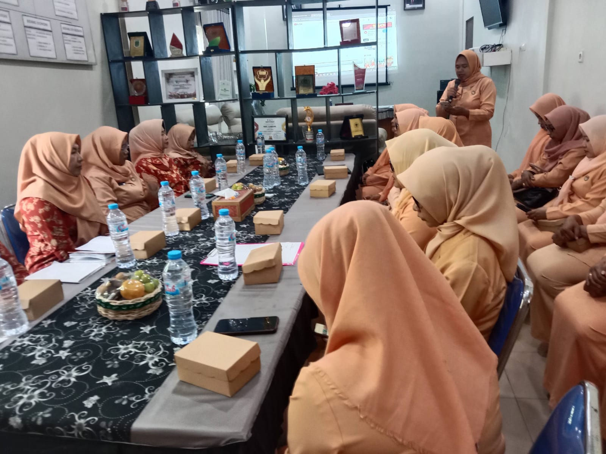

Deskripsi Kegiatan
Gotong royong adalah salah satu kegiatan rutin warga Kecamatan Labang untuk menjaga kebersihan dan keindahan lingkungan. Warga bersama-sama membersihkan area sekitar, seperti jalanan, taman, dan tempat umum lainnya. Kegiatan ini juga menjadi ajang untuk mempererat hubungan sosial antar warga.
Tujuan Kegiatan
Kegiatan ini bertujuan untuk menciptakan lingkungan yang bersih, sehat, dan nyaman, serta memperkuat rasa kebersamaan di antara masyarakat.
Galeri Foto

 

